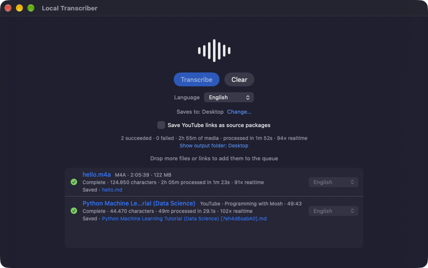
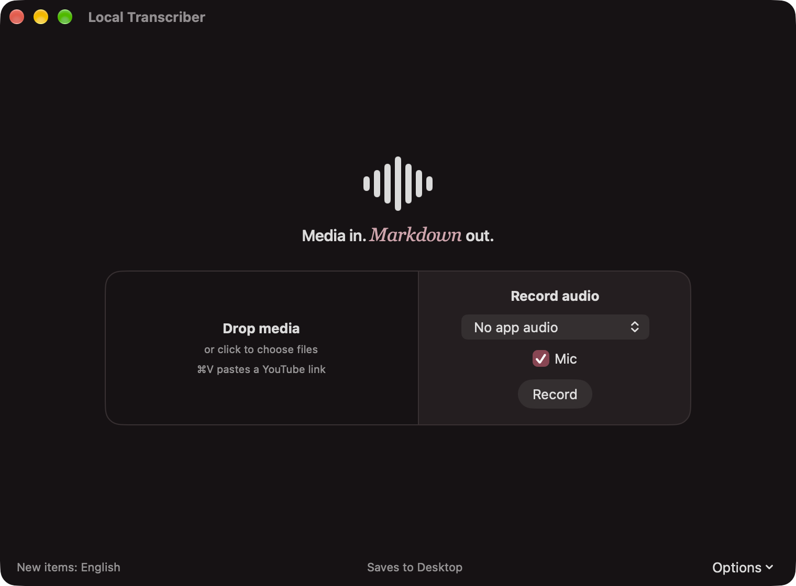

Media in. Markdown out.
Local Transcriber is a native macOS app that turns audio, video and YouTube links into timestamped Markdown transcripts. Speech recognition runs on your Mac with Apple's on-device speech stack: no cloud transcription service, no account and no model picker.
An early project with no release or download yet. It is built from source.

How it works
One queue. One folder. One Markdown file per source.
The product boundary is deliberate: media or a link goes in, a local transcript package comes out. The transcript is the artifact. The app does not summarize, index, search, rewrite or "clean up" what was said.
-
Add media
Drag files or YouTube links onto the window, or copy and press ⌘V. MP4, MOV, M4A, MP3 and WAV files, plus youtube.com and youtu.be links.
-
Queue
Jobs run one at a time: Waiting, Downloading, Transcribing, then Complete or Failed. A failed job never stops the others, and Retry puts it back in line.
-
Transcribe
Apple's speech stack runs on your Mac. For video, AVFoundation first extracts the audio to a temporary M4A.
-
Save
Each transcript is written to the folder you chose once. Files are never overwritten: a name that exists becomes
name 2.md.

Language per job
Language is set per job. A queue-level selector sets the default for new jobs, and Apply to all changes every job that is still waiting. A job's language is fixed once it starts.
- English en-US
- Dutch nl-NL
- German de-DE
- French fr-FR
- Russian ru-RU
- Spanish es-ES
- Italian it-IT
- Portuguese pt-BR
- Turkish tr-TR
- Swedish sv-SE
Availability depends on what macOS offers for that language, and macOS may download Apple's language assets the first time a language is used.
Output
A timestamped Markdown file you own.
Each transcript is one Markdown file, ordered by audio time and grouped by minute under a timestamp heading. The first time you transcribe, the app asks for an output folder and remembers it.
# example
**Source:** `example.m4a`
**Duration:** 00:05:00
**Language:** en-US
**Engine:** Apple SpeechAnalyzer
## Transcript
### 00:00:00
Transcript text...- Local files keep their name:
example.m4abecomesexample.md. - YouTube links are saved as
<video title> [<video ID>].md. - A summary line shows succeeded and failed counts, total media duration, processing time and realtime speed.
- If an automatic save fails, the job stays complete and offers Save Transcript as a manual fallback.
Local and network
Transcription stays on the Mac. Links need the network.
Transcription never leaves the machine, but the app is not fully offline when you give it links: a YouTube link cannot be transcribed without downloading its audio first.
| Step | Where it happens |
|---|---|
| Transcription, local files and YouTube audio alike | On your Mac Apple's speech stack |
| Audio extraction from video | On your Mac AVFoundation |
| Reading and writing transcripts | On your Mac |
| Downloading a YouTube link's audio | Over the network from YouTube |
| Apple language assets for a language you have not used yet | Over the network managed by macOS |
The YouTube download is temporary and is deleted when the job ends, and any leftovers are swept at the next launch. Audio is fetched by a small helper bundled in the app: a pinned yt-dlp release run by an arm64 build of Python 3.13. It runs as a child of the app inside the same App Sandbox, with no entitlements of its own, and is stopped when the app quits. There is no runtime self-update.
Source packages
Keep the audio and its provenance with the transcript.
Turn on Save YouTube links as source packages (shown only
while the queue contains a YouTube link) and each link is saved as a
folder named after its video ID instead of a single file. Local files
are always saved as a single .md.
<output folder>/jNQXAC9IVRw/
audio.m4athe downloaded audiosource.jsonwhere it came fromtranscript.mdthe timestamped transcript, with the video's URL, channel and date
{
"acquiredAt" : "2026-10-01T00:13:47Z",
"audioFilename" : "audio.m4a",
"channel" : "jawed",
"durationSeconds" : 19,
"publishedDate" : "2005-04-24",
"schemaVersion" : 1,
"sourceType" : "youtube",
"sourceURL" : "https://www.youtube.com/watch?v=jNQXAC9IVRw",
"title" : "Me at the zoo",
"transcriptionLocale" : "en-US",
"videoID" : "jNQXAC9IVRw"
}
An existing folder is never reused (a repeat becomes
jNQXAC9IVRw 2/), and a package that cannot be completed is
not left half-written. source.json is a small, versioned
schema owned by the app, not a copy of what the downloader reports;
unknown fields are omitted.
Current limitations
- Platform
- Requires macOS 26 or later.
- Distribution
- No published release and no prebuilt download. The app has not been notarized.
- Hardware
- The YouTube helper is Apple silicon only. Intel Macs are untested, and YouTube links are not expected to work there.
- YouTube
- Extraction depends on a pinned yt-dlp that never updates itself and can stop working as YouTube changes. Only YouTube is supported as a link source: no other sites, playlists or channels. A single download is limited to 30 minutes.
- Testing
- There are no automated tests; behavior is checked by running the real app.
Not in scope
- Cloud transcription and accounts
- Summarization, search or retrieval over transcripts
- A knowledge-base layer
- Automatic correction or rewriting of transcript text
- A model picker or a transcript editor
- Downloads from sites other than YouTube
Build from source
There is no download yet. Build it with Xcode.
You need a Mac running macOS 26 or later and Xcode. Development and testing so far used Apple silicon with Xcode 27.
-
Clone the local-transcriber repository from GitHub.
-
Open
LocalTranscriber.xcodeprojin Xcode. -
Run the
LocalTranscriberscheme. Xcode may ask you to pick your own development team under Signing & Capabilities. A build phase copies the YouTube helper into the app and signs it.